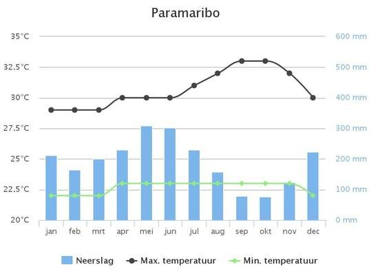
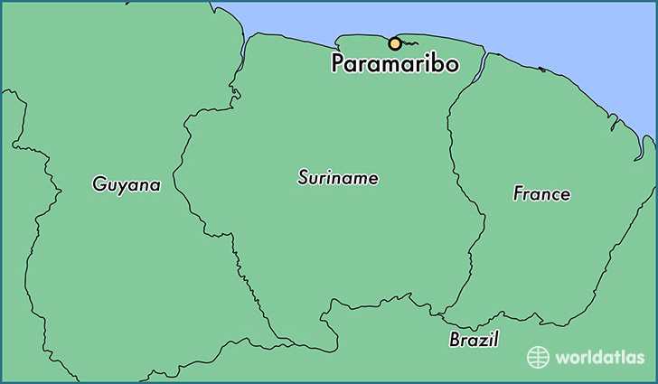
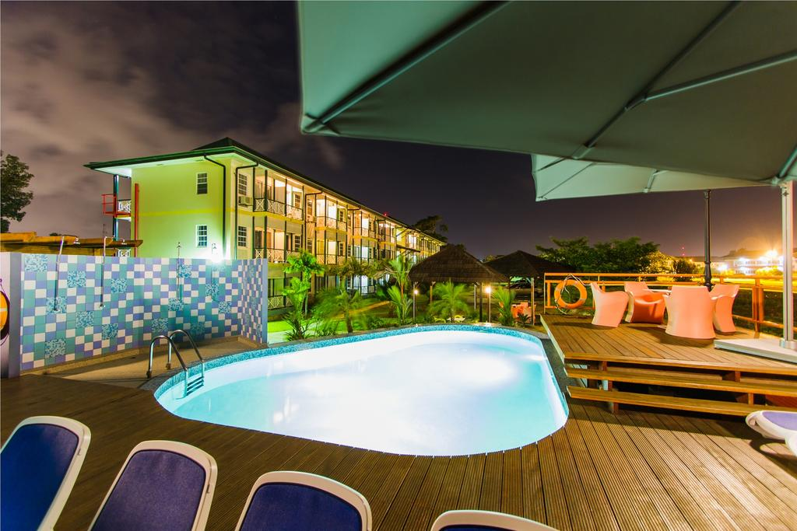
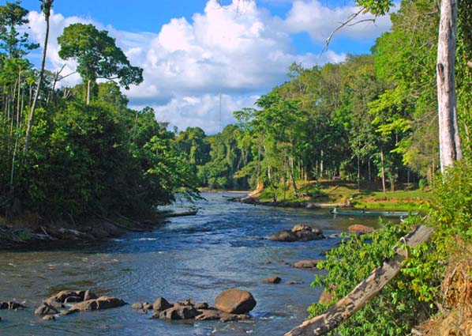

Wereldreis Klimaatgebeiden
(Aardrijkskunde PO)
Tropisch Klimaat
Voor de laatste deel van de reis gaan we naar Paramaribo, Suriname.
Klimaat & Klimaatgrafiek
Paramaribo ligt in een Tropisch Klimaat, omdat het heel vochtig en warm is, omdat het super dicht bij de evenaar zit. Het regent ook super veel in Tropische klimaten.

Een Klimaat grafiek van Paramaribo
Ligging
Paramaribo is de hoofdstad van Suriname. Het duurt 8uur en 55min om via Amsterdam naar Paramaribo te vliegen.

Accomodatie
Eco Resort Inn
Eco Resort Inn is een 3 sterrenhotel met een prachtige zwembad, en veel natuur. Is is gratis wifi en een shuttle naar het vliegveld, Zanderij Airport.

Vegetatie
In Paramaribo groeien er heel veel planten, omdat het vochtig, en warm is, maar niet te warm. Planten/ bomen groeien het hele jaar door.
